Oculus Passive Stylus Tracking Implementation and Analysis
William Carty, Samuel Mahle, Paul GibertFall 2020 CS 4476 Computer Vision: Class Project
Georgia Tech
Abstract
The recent boom in AR/VR applications is giving way to many unique tracking problems in computer vision, particularly those that are framed around passive components. This project analyzes the effectivity of enhancing ArUco marker tracking with an optic flow, based on a passive stylus tracking application proposed by Oculus researchers. We show that optic flow can be used to detect markers throughout more frames than just AruCo alone.Teaser figure
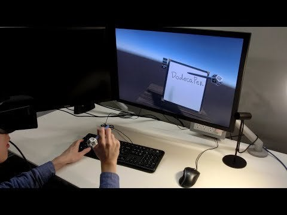
Introduction
A growing demand in AR/VR applications has pushed researchers in computer vision fields to explore many new problems, particularly object tracking. Whether the desired object to track is a game controller, stylus, or hand there is desire across many industries not only for accuracy, but also a passive system. In 2020 Oculus experimented with hand tracking in place of controllers and officially implemented the feature in a release of their Oculus Quest 2 virtual reality headset (https://tech.fb.com/making-technology-feel-natural/). In addition, Oculus published a tracking system that combined ArUco markers with optic flow and dense pose alignment to estimate the pose of a passive pen (https://research.fb.com/wp-content/uploads/2017/09/uist2017_pen.pdf). This project builds off Oculus’s work in the former by bringing part of their system out of C++ and into a Python environment. We also use it to track an arbitrary passive object by combining AruCo markers and optic flow.Approach
Two AruCo markers are affixed to an arbitrary object; we chose a comb and squares markers of side length 3.65cm. The comb is then translated and rotated between 2 defined points in front of a fixed iphone camera at different speeds. The goal is to successfully determine the pose of as many markers in as many frames as possible. Given a frame, we first convert it to grayscale, and use AruCo to guess the image coordinates of the marker corners. If AruCo fails to detect a given marker m, we turn to optic flow. If the marker was successfully detected in the previous frame, we use OpenCV’s LK pyramidal optic flow algorithm to compute the flow of the marker corners from the previous frame to determine the corners of the undetected marker in the current frame. This algorithm minimizes the following equation: [Insert equation] After calibrating the camera with a ChArUco board we are able to determine the pose of each marker. [Insert image of markers with poses on them as the y are being rotated/translated] We faced many lab setup restrictions due to COVID thus had trouble maintaining control variables as well as we would like. For example, the comb was translated and rotated by hand. One way we countered this was by basing our metrics only on the number of frames that objected existed in between the start and finish points, and made the assumption that an object that took less frames to reach the ending point was moving faster. We also had no way of measuring the true precision of the tracker so instead we made our measure for accuracy binary: either the fit “was close enough” or it was rejected. We used AruCo’s and OpenCV’s built in standards for “good fits” for simplicity.Experiments and results
We used the ArUco library in addition to implementing our own tracking and calibration algorithms in Python. We implemented the shell of the stylus tracking system as described the Oculus paper [1] and the pyramidal LK optical flow tracking algorithm referenced in the Oculus paper [3]. We built our own dataset by filming ourselves moving the Aruco markers. We conducted ___ experiments, each experiment consisting of ____. The system’s accuracy is measured by comparing the marker detection with and without optical flow.Approximate Pose Estimation
Twelve markers from the ARUCO 6x6 dictionary were randomly chosen.
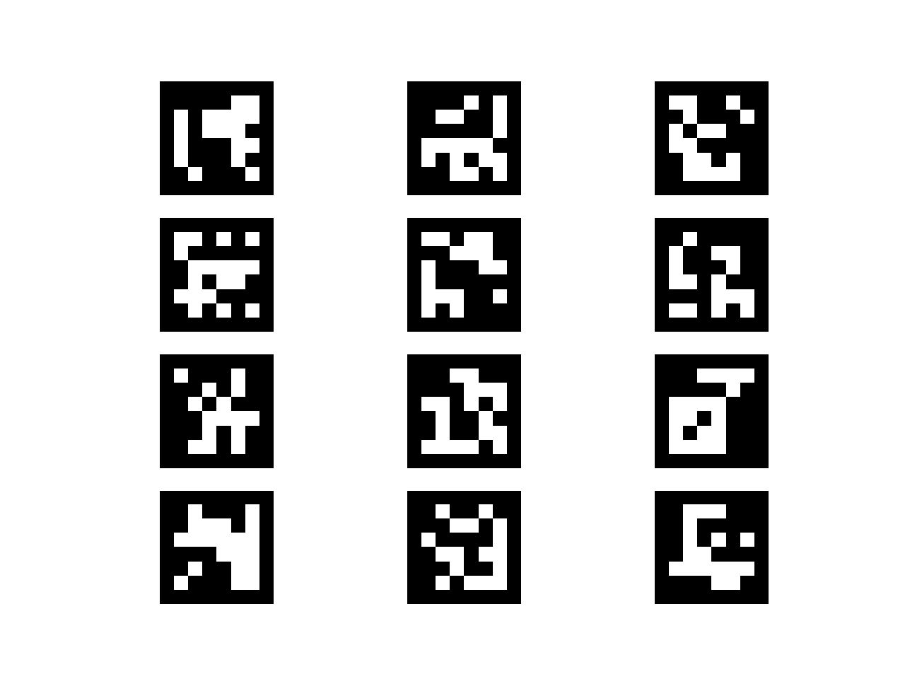
Marker Creation
We then calibrated the camera using a series of images captured in a video.
We used a chessboard calibrated the camera as the distinct black and white squares make for easy identification.
We continuously moved the camera around until the camera had captured 30 distinct images of the chessboard.
Finally, we passed the image and points from the identified chessboard into Open CV's camera callibration method,
which solved for the camera matrix and the distortion matrix uses a linear least squares solution to the problem
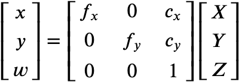
where fx and fy are focal lengths and cx and cy are camera centers.
Markers were randomly oriented and placed on a sheet of paper which is displayed below.
The markers were identified using ARUCO's detectMarkers function.
This function takes and image and dictionary of markers as input and returns a list of the identified markers and the associated locations in the image.
It did this by first identifying square-shaped objects in the image using adaptive thresholding and
then rotating the image four times to see if any of its alignments match a predefined marker.
Finally, we computed approximate pose estimated using the previously calibrated camera.
Using ARUCO's estimatePoseSingleMarkers function we computed the pose estimation by minimizing
the reprojection error amongst the image corners given the camera and distortion matrices.
Using our old markers image, we drew the APE estimations with the help of ARUCO's drawAxis function.
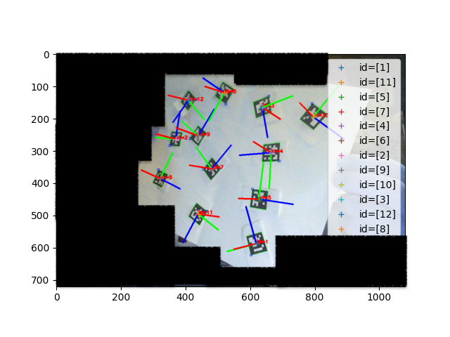
Approximate Pose Estimation
Inter-frame Corner Tracking
To test the second stage of the pipeline,
we partially implemented the LK pyramidal optical flow tracker in Python3,
but ran a full optical flow experiment using OpenCV.
The final project will build upon this test experiment to implement the second stage of the stylus tracking pipeline.
To compute pyramidal optical flow between images I and J we minimize the equation
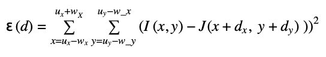
over a (wx+1)×(wy+1) sized image window centered on a feature located at point u.
The pyramidal algorithm propagates guesses for d by performing the minimization
on resampling of the original image from a low resolution to the original resolution.
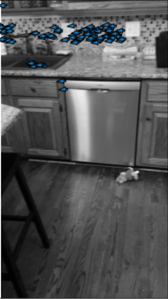
Figure ?. OpenCV velocity vectors from LK pyramidal tracker
Dense Pose Refinement
Dense pose refinement (DPR) proved to be more difficult than initially expected due to some ambiguity in the source paper.
Much of this boiled down to the exact meaning of “appearance distance” which we now understand refers to a delta in pixel color/intensity rather than a physical distance between pixels.
Due to this initial misunderstanding, much of our work on DPR so far has been research and thus we do not yet have significant experimental results from this phase of the pipeline.
The overarching idea of DPR is to create a “dense alignment” which projects every pixel of the arUco markers onto the image plane, not just the single point describing the marker’s position relative to the stylus (this being what makes it “dense”). This dense alignment is then used to minimize the difference in intensity between the projected object points in the image and their corresponding point in the reference arUco markers.
The overarching idea of DPR is to create a “dense alignment” which projects every pixel of the arUco markers onto the image plane, not just the single point describing the marker’s position relative to the stylus (this being what makes it “dense”). This dense alignment is then used to minimize the difference in intensity between the projected object points in the image and their corresponding point in the reference arUco markers.
The following grayscale images demonstrate a change of perspective accompanied with a change in observed intensity values.
The intensity of the top left most black pixel is used, however the boxes are enlarged for visualization.
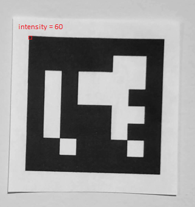
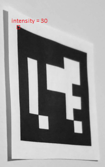
The ground-truth intensity for that pixel would be full black (255).
To reduce the impact of lighting when working with several visible markers with different poses, intensity is normalized per marker.
The exact normalization method has not yet been explicitly defined.
The algorithm for minimizing appearance distances is set up as a nonlinear least squares problem that resembles APE.
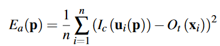
However the Gauss Newton algorithm is used instead of Levenberg–Marquardt. Backtracking line search is used when the non-linear Gauss Newton iteration does not converge.
DPR can be seen as a much higher resolution alignment than APE, which makes it computationally expensive.
The pose determined by APE serves as an initial guess which will help significantly.
Due to the binary nature of the markers, the algorithm is further optimized by ignoring “flat” regions of the image where intensity does not change.
An arUco marker is shown below along with an example mask.
The gray regions are the mask and are ignored, resulting in only the edges between white and black regions being used for dense alignment.
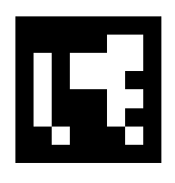
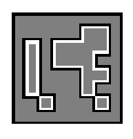
These masks are precomputed for each marker and do not change.

Qualitative results
The idea behind the experience what to use aruco to detect markers, utilizing optic flow when APE failed, to detect markers in more frames.
We analyzed 22 videos of the brush: 11 translation videos (brush moving left to right at different speeds) and 11 rotation videos (brush rotating at different speeds).
In this videos, we sought to detect how many frames we could detect markers in with both with and without optical flow.
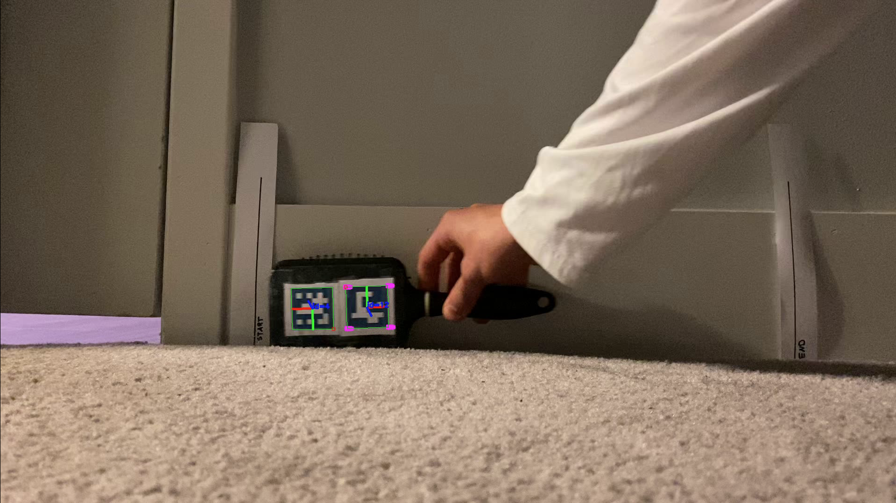 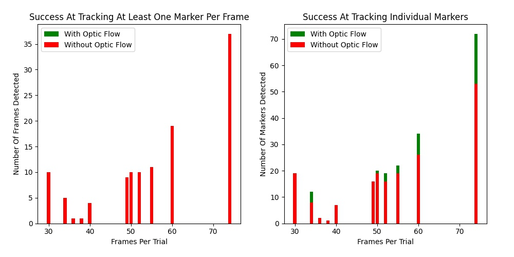
Translation Experiment and Results
During the horizontal translation, with less frames per trial (slower movement), Approximate Pose Estimation produced same results both with and without Opitical Flow.
On the other hand, with greater than 50 frames per trial, Optical Flow performed significantly better. During __ frames per trail, the APE with Optic Flow detected ___ %
more frames.
These findings were supported by the results from the rotation trial, in which the brush was rotated 180 degrees forwards then backwards.
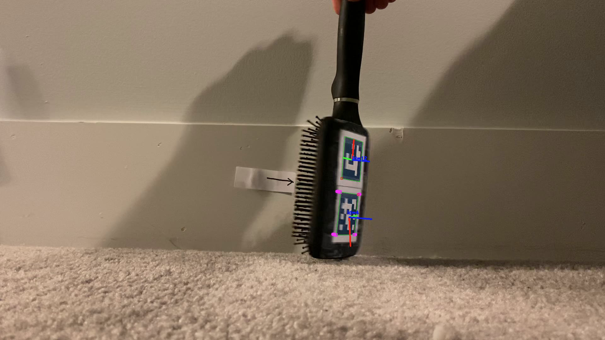 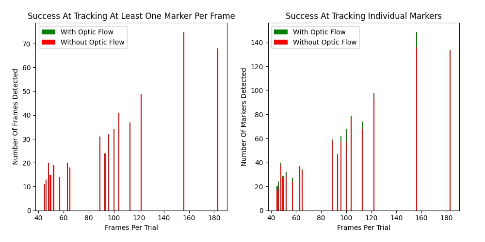

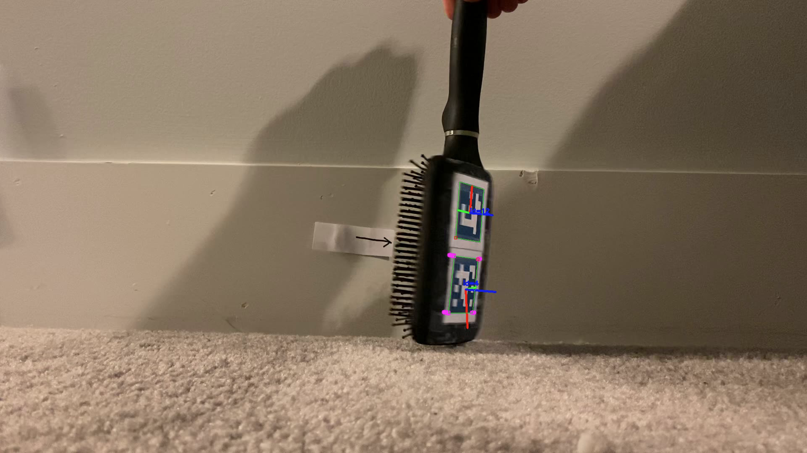 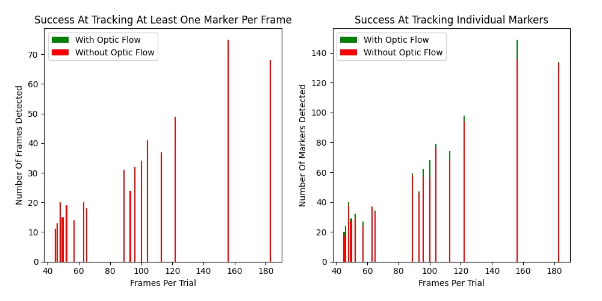
Rotation Experiment and Results
Similar to translation, during trials with a smaller amount of frame, Approximate Pose Estimation performed similarly with and without Opitical Flow.
On the other hand, with greater than 100 frames per trial, Optical Flow performed significantly better. During __ frames per trail, the APE with Optic Flow detected ___ %
more frames.
MAYBE ADD COMPARISION BETWEEN ROTATION AND TRANSLATION.
Conclusion
----Future Work
----References
[1] Po-Chen Wu, Robert Wang, Kenrick Kin, Christopher Twigg, Shangchen Han, Ming-Hsuan Yang, and Shao-Yi Chien. 2017. DodecaPen: Accurate 6DoF Tracking of a Passive Stylus. ACM Symposium on User Interface Software and Technology. [2] Sergio Garrido-Jurado, Rafael Muñoz-Salinas, Francisco José Madrid-Cuevas, and Manuel Jesús Marín-Jiménez. 2014. Automatic Generation and Detection of Highly Reliable Fiducial Markers Under Occlusion. Pattern Recognition 47, 6 (2014), 2280–2292. [3] Jean-Yves Bouguet. 2001. Pyramidal Implementation of the Lucas Kanade Feature Tracker: Description of the Algorithm. Intel Corporation 5, 1-10 (2001), 4.